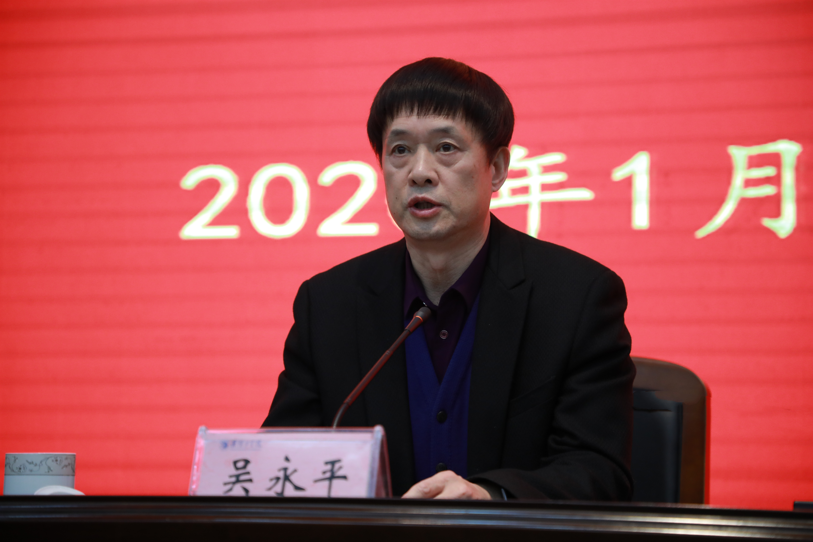

供稿：宣传部（新闻中心） 日期：2020年01月14日 18:48 浏览量：[ 44]

根据省委主题教育第十三巡回指导组工作部署，1月14日，我校在翔宇楼二楼报告厅召开“不忘初心、牢记使命”主题教育总结大会。省委主题教育第十三巡回指导组组长、徐州医科大学原党委书记吴永平出席会议并讲话。党委书记赵炳起代表校党委作题为《牢记初心使命 激扬奋斗精神 努力开创学校事业发展崭新篇章》的主题教育总结汇报。校长孙爱武主持会议。

吴永平对我校主题教育的开展总体情况给予充分肯定。他指出，主题教育开展以来，淮阴工学院党委认真贯彻落实中央要求和省委部署，把主题教育作为一项重大政治任务牢牢抓在手上，紧密结合工作实际，加强领导、精心组织，坚持标准、统筹推进，主题教育取得丰硕成果。总体来说，淮阴工学院主题教育呈现突出领导带头示范引领，突出学深悟透打牢基础，突出动真碰硬真抓实改，突出抓牢支部提质增效等四个特点。
吴永平强调，淮阴工学院要把学习贯彻习近平总书记重要讲话作为当前的一项重要政治任务，结合省委娄勤俭书记讲话精神，扎实抓好学习贯彻工作。要继续在理论武装上下功夫，把学习贯彻新思想不断引向深入；要继续在整改落实上下功夫，让群众感受到新变化新成效；要继续在建章立制上下功夫，巩固和拓展主题教育成果；要继续在服务大局上下功夫，扎实推动高质量发展走在前列。

赵炳起详细介绍了学校开展“不忘初心、牢记使命”主题教育的开展情况、主要做法、工作成效和经验。他指出，自启动“不忘初心、牢记使命”主题教育以来，校党委按照中央决策部署和省委要求，把深入学习贯彻习近平新时代中国特色社会主义思想作为根本任务，全面把握“守初心、担使命，找差距、抓落实”的总要求，按照省委“五深入五确保”要求，在省委主题教育第十三巡回指导组的精准指导下，校党委精心谋划组织，各基层党组织有力推动，广大师生党员积极投入，全体教职员工热情支持，高质量完成了主题教育的各项工作任务。《光明日报》《新华日报》《群众》“学习强国”“新华网”“江苏卫视”“中国青年网”等各级各类主流媒体先后宣传报道学校主题教育相关内容和推进基层党建、课程思政改革等经验做法200余次。
赵炳起指出，主题教育开展以来，学校采取四项举措，有力地确保了主题教育走深走实。一是按照“提前部署安排、提前学习研讨、提前检视整改”的思路，超前谋划、先学先做。二是坚持上下联动抓落实。学校建立健全组织机构，层层压实主体责任，校党委以上率下、基层党组织全面跟进、全体党员共同参与，保证主题教育工作步调一致、一贯到底。三是一体推进贯始终。学校把学习教育、调查研究、检视问题、整改落实贯穿主题教育全过程，以“钉钉子精神”有计划有步骤推进主题教育。四是真抓实干促整改。突出问题导向，奔着问题去，盯着问题改，注重对标整改、源头整改，确保主题教育不走过场，取得实效。
赵炳起指出，学校的主题教育能够顺利进行并取得比较好的成效，主要得益于省委主题教育第十三巡回指导组的精准指导，得益于紧密联系学校实际，通过将主题教育与学校事业高质量发展有机融合，实现了开展主题教育与坚持立德树人根本、与推动学校事业发展、与完善治理制度、与提升师生员工幸福指数等“四个结合”，找到了有效工作抓手。
赵炳起强调，下一步，学校要以这次主题教育为新的起点，在巩固已取得良好成效的基础上，继续认真做好工作，始终做到初心永擎、使命在肩。要进一步强化理论武装，做到学习习近平新时代中国特色社会主义思想走深走实；进一步树牢宗旨意识，继续推动问题整改落细落实；进一步建立长效机制，实现主题教育工作抓常抓久；进一步坚持以上率下，做到党员领导干部带头带领。

孙爱武主持会议并就贯彻落实会议精神提出三点要求：一是要提高政治站位，统一思想认识。要增强“四个意识”、坚定“四个自信”、做到“两个维护”，把学习贯彻习近平总书记重要讲话作为重大政治任务，强化理论武装，坚定理想信念，提高政治站位，学深悟透习近平新时代中国特色社会主义思想，坚持用马克思主义中国化最新成果统一思想、统一意志、统一行动，坚持高标准、严要求，不断叩问初心、滋养初心，不断坚守使命、担当使命，切实把初心和使命变成锐意进取、开拓创新、推动工作的精气神和埋头苦干、真抓实干的原动力。二是要认真做好总结，建立长效机制。要着眼于经常性检视和解决违背初心使命的问题，推动“不忘初心、牢记使命”常态化、制度化、长效化，着力扩大加快发展补短板、全力整改破难题的实际成效，着力把主题教育成果转化为推动学校发展的强大力量，不断提升做好学校各项工作的能力，不断推进学校治理体系和治理能力现代化，进一步把“守初心、担使命，找差距、抓落实”的总要求深化细化、落地落细，努力创造经得起实践检验、让师生满意的实绩。三是要坚持以上率下，勇于担当作为。要进一步激发广大党员、干部担当作为、勇挑重担的积极性主动性创造性，要让那些在关键时候豁得出、重大任务面前冲得上的猛将、在攻坚克难中闯关夺隘、攻城拔寨的闯将、在推进改革发展中敢于担当、狠抓落实的干将“热”起来、“火”起来、“香”起来、“红”起来，促使各级干部各司其职、各类干部各得其所，积极营造想干事、敢干事、能干事、干成事的良好发展氛围，确保为学校全年各项事业发展开好局、起好步，奋力推进学校高质量发展，为全面创建特色鲜明的高水平应用型大学奠定坚实基础。
会后，省委主题教育指导组还对我校主题教育开展情况进行了现场测评。
第十三巡回指导组成员，校党委和行政领导班子成员，近期退休的校领导，全体中层干部、师生党员代表参加会议。